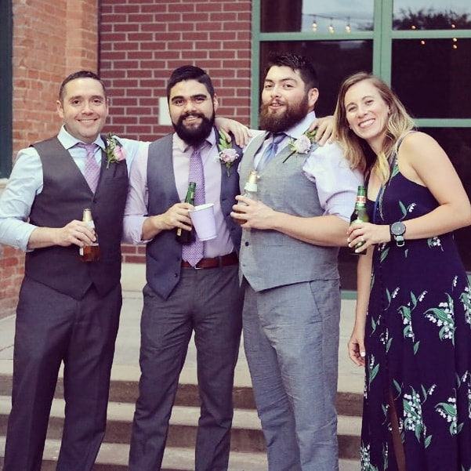

Hello there! As you can tell from the top of the page my name is Jacob Wheat. I am very new to coding but I'm looking forward to completing my schooling and getting out there in the work world. I'm so exctied for this new chapter in my life and all the wonderful oppurtunities it may bring.
I'm new to Utah and originally from Texas. I have tons of hobbies which include playing instruments, going hiking, gaming and really anything that involves being outdoors.
I've spent most of my adult life working good jobs that have been physically tasking on my body. So in order to completely change that while still being able to make a decent income, I'm changing my whole life. I'm going to school for computer coding and making it happen. This new passion will lead to a new career which will lead to a new life which will in turn lead to a better overall enjoyment of life.
I would love the oppurtunity to join any team or workplace that believes in growth and supports constant learning of new technologies.